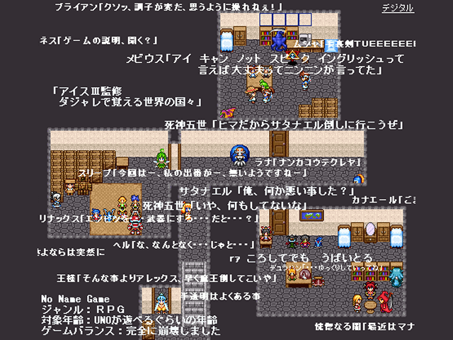

|
| |
 | |
| 【作者名】 | kuraud |
| 【作者コメント】 | (頑張れば)開始２０分で倒せるサタナエル、 (たぶん)１５０体以上の敵と連続で戦うおまけモード、 何時でもパーティから外せる主人公、 レベル上げが(ほぼ)必要無い難易度、 どう考えてもチートな性能の妖精さん、 武器が持てるようになったカーバンクル、 珍しく人型じゃないどらごなすーん、 装備変更ができない、魔法も覚えないハー妹、 ２倍、４倍で移動できる便利なダッシュシステム、 大量に置かれている隠しアイテムと宝箱、 様々な条件で(細かい部分が)変化するＥＤ・・・・・。 年越しの１時間前とかの恐ろしくヒマな時にオススメです。 |
| 【管理人コメント】 | やっぱりEnglishには親しんだほうがいいと思うんだ。間違いない。 |
|
| |